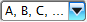
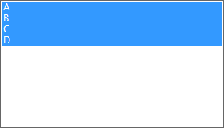
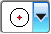
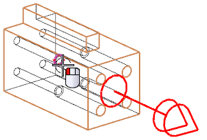
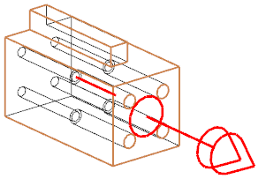
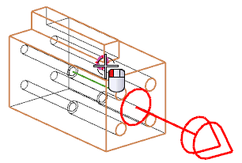
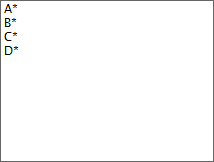
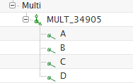
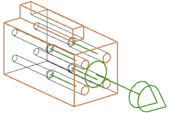

为各个连接器指派管端
要指派管端，NX 可以为您生成一个序列，然后您只要以合适的顺序分别各个管端位置。
-
在指派管端对话框中，点击生成序列。
对于这个练习，您无需为管端指定前缀或者后缀，只需要字母即可。
-
在序列名称对话框中，保留前缀与后缀输入框空白。
您需要为各个管端指派一个字母。
-
在方法列表中，选择：

您将使这些管端的名称分别为 A 到 D，因此您需要在对话框中设置一些限制。
-
在从以及至输入框中，分别键入：
从
=
a
至
=
d
(您不需要使用大写输入。)
-
点击确定。
您将返回指派管端对话框，字母 A 到 D 将出现在列表框中。
-
将鼠标从 A 拖动到 D，以使它们高亮显示。

-
点击放置管端。
将打开放置管端对话框，第一个管端的名称为 A。
使用四个沉头孔的中心来指定管端的原点。
-
确保过滤器是设置为点，然后在点方法列表中，选择圆弧中心/椭圆中心/球心。

管端 A 位于左上角。
-
选择如图所示的沉头底边，以放置管端 A。

-
确保管端指向“多个端口”。

如果不是，请点击循环方向。
-
点击确定或者单击鼠标中键以前进至下一个管端。
下一个端口的字母 B 将显示在对话框中。
-
选择如图所示右上角沉头的底边，以放置管端 B。

-
点击确定。
-
使用相同的方法来指派管端 C 和 D。(C 位于 A 正下方。)
当您创建完成最后一个管端时，将返回指派管端对话框。字母 A、B、C、D 的后面现在将显示一个星号，表示已经指派了管端。

-
点击确定。
您将返回审核部件对话框，展开 MULTI_XXXXX 节点以查看组成“多个端口”的单元：四个沉头孔已经被定义为管端(以小绿色管端符号表示)。同时，NX 也为“多个端口”分配了一个默认名称。

NX 也创建了一个永久的“多个端口”符号，这个符号有一个双箭头。

-
选择字母以在部件中查看它对应的管端。